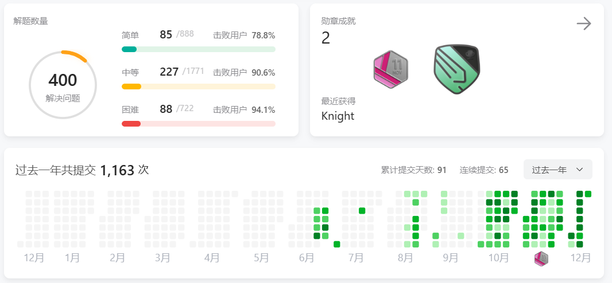

本周的算法学习主要是刷题+看书，没有学什么新算法，只零碎地学了一些小的知识点。
二分模版
虽然以前二分写的不少，但从来没有一次写对过，看了lyd的书之后才知道有两种二分模版。
1 | // 模版一 |
货仓选址问题
数轴上有N家商店，坐标分别为A[1]~A[N]，选一个位置建货仓，令货仓到每家商店的距离之和最小。
- 货仓必须建在中位数处，证明不难，思考一下。
矩形面积问题
复习了一下这几道题，很典型。
84. 柱状图中最大的矩形 - 力扣（LeetCode）
85. 最大矩形 - 力扣（LeetCode）
1727. 重新排列后的最大子矩阵 - 力扣（LeetCode）
顺便记录一下，力扣400题达成！

第32次CSP认证
今天去考了csp认证，感觉题目比上几次稍微难一点。
- 第一题，签到题，忘了，100分。
- 第二题，分解质因数，这周刚刚做过哈哈哈，100分。
- 第三题，树。哭了感觉这次第三题不是模拟而是算法了。暴力解60分，加了记忆化还是60分，不会优化了。。。
- 第四题，暴力，35分。
- 第五题，试图暴力，但找不出哪里写错了，0分。
最后295分，还以为能上300的。。。问题不大，毕竟氪了西西艾弗的会员，明年再来！
杂念
准备了一段时间的csp也结束了，之后学算法的时间应该会缩短了，因为期末周快到了呜。接下来保持每天3道以上的刷题，然后花点时间继续啃lyd的书。其余更多的时间就要用来准备期末考了。另外，为了应对机组机考，下周进行Java复健，刷题尽量写爪哇吧，毕竟一个学期都没咋写过了。
最近读完了《围城》。读书时只顾情节，不及品悟“围城”的含义。直到最后戛然而止，心想“围城”何在？原来“围城”处处在。方鸿渐一次又一次冲出“围城”，却又进入另一个“围城”。他不断辗转，希望通过“出城”来改善处境，不料处境丝毫未见好转。人生在世，难免有处境不顺的时候。有人埋怨环境，认为是地方不好，以为换一个环境就能过的更好。然而事实往往是，当他们换了一个环境之后，又觉得还是不够好，于是不断辗转，最后却还是没过上称心如意的生活。其实，“围城”真的存在吗？自己的处境，真的是环境造成的吗？我想，围住自己的不是外部的城，而是自己的心墙。一个人内心苍白，无论在哪都无趣；内心没有目标，无论走多远都走不出围城。我们要做的，不是期待遇到一个好人、工作、环境带给自己幸福，而是要让自己成为一个有“幸福力“的人，让自己保持幸福的状态。这样的话，无论和谁在一起，身处何地，都是幸福的。
一个人的内心是一个人真正的主人。心念所囚即为牢笼，心念所驻即为城池。能困住人的永远不会是墙，困住人的是现实的琐碎和人心的羁绊，是自己筑成的心墙。心若被困住，哪里都是围城，心若没有栖息，哪里都是流浪。
需要我们记住的是：自由不在墙外，自由在你心里。